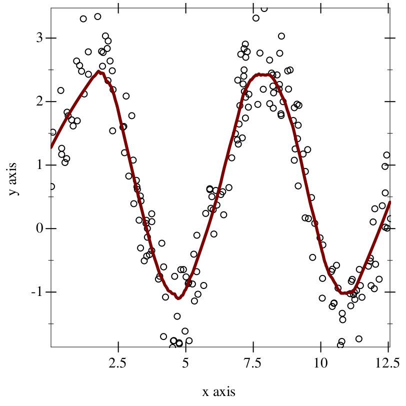
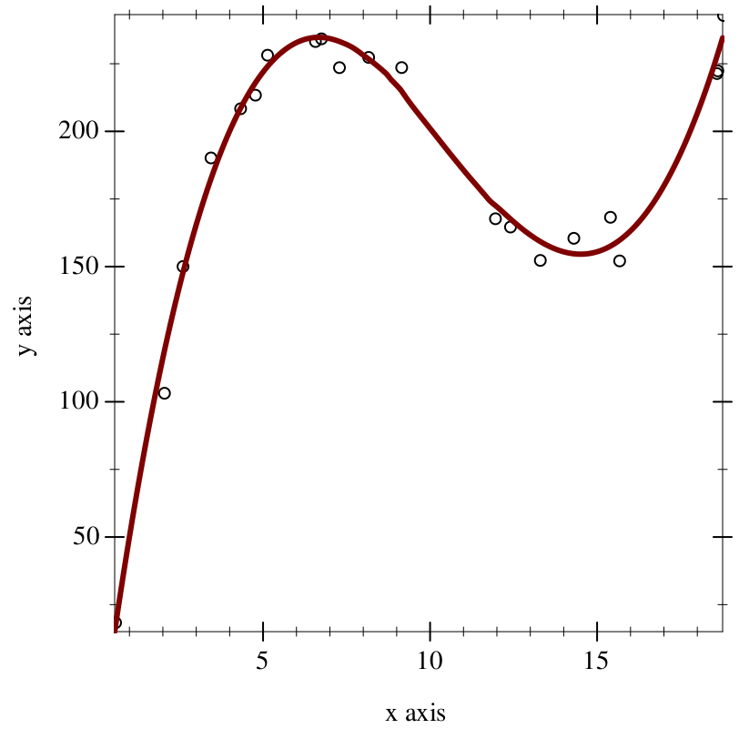

Loess: local polynomial regression
| (require loess) | package: loess |
Loess is a library for calculating lines of best fit using local polynomial regression, which is a non-parametric regression method that calculates various individual regressions for each point. It is useful for when you have data that does not follow a clearly discernable pattern, or when you just want a smooth line for a data visualization.
procedure
(loess-fit xs ys [#:span span #:degree degree]) → (-> Real Real)
xs : (Vectorof Real) ys : (Vectorof Real) span : Real = 0.75 degree : Positive-Integer = 1
xs and ys are assumed to be vectors of the same length, with each observation being at the same index in each vector.
The optional keyword argument #:span dictates the proportion of the data to factor into each local regression. For example, if the span is 0.1, the local regression will use the (* 0.1 (vector-length xs)) nearest neighbors to the input point. Generally, increasing #:span increases the influence of bias in the resulting model, and decreasing it increases the influence of variance. This number is assumed to be between (/ (add1 degree) (vector-length xs)) and 1 (as otherwise there are not enough points to create a fit).
The optional keyword argument #:degree dictates the degree of each local regression, and not the degree of the complete regression.
If the result is suboptimal or jittery, changing #:span and #:degree is generally the key. If the line appears too flat, generally you want to reduce #:span, and if it appears too chaotic, generally you want to increase #:span.
> (define pure-xs : (Vectorof Real) (vector-sort (ann (build-vector 200 (λ _ (* (random) 4.0 pi))) (Vectorof Real)) <))
> (define noisy-ys : (Vectorof Real) (vector-map (λ ([x : Real]) (+ (* 2 (sin x)) (* 1.5 (random)))) pure-xs))
> (plot (list (points (vector-map (inst vector Real) pure-xs noisy-ys)) (function (loess-fit pure-xs noisy-ys #:span 0.2) #:width 3))) - : plot-pict

> (define xx : (Vectorof Real) (vector 0.5578196 2.0217271 2.5773252 3.4140288 4.3014084 4.7448394 5.1073781 6.5411662 6.7216176 7.2600583 8.1335874 9.1224379 11.9296663 12.3797674 13.2728619 14.2767453 15.3731026 15.6476637 18.5605355 18.5866354 18.7572812))
> (define yy : (Vectorof Real) (vector 18.63654 103.49646 150.35391 190.51031 208.70115 213.71135 228.49353 233.55387 234.55054 223.89225 227.68339 223.91982 168.01999 164.9575 152.61107 160.78742 168.55567 152.42658 221.70702 222.6904 243.18828))
> (plot (list (points (vector-map (inst vector Real) xx yy)) (function (loess-fit xx yy #:degree 3) #:width 3))) - : plot-pict
